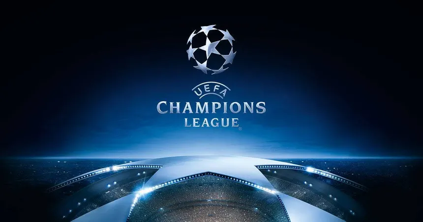
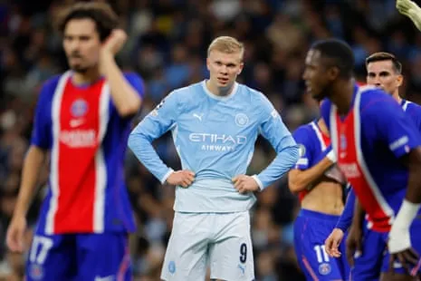

Renzo William
Reportador
La Champions League completó su segunda jornada con una colección de goleadas, remontadas y sorpresas que dejó la lucha por la clasificación cada vez más interesante. Entre el martes y el miércoles se marcaron 78 goles, para un promedio de 4,3 por partido, en una fecha que tuvo como protagonistas al París Saint-Germain, el Real Madrid, el Barcelona, Liverpool y Aston Villa. El PSG consiguió uno de los resultados más destacados al derrotar 4-2 al Manchester City en Inglaterra. Désiré Doué, Ousmane Dembélé, Vitinha y Maghnes Akliouche anotaron para el conjunto francés, mientras que Erling Haaland marcó los dos tantos del equipo dirigido por Pep Guardiola.

Real Madrid también celebró una victoria de alto impacto. Cuando parecía que la Roma tenía el partido controlado con una ventaja de 3-1, el conjunto español reaccionó en los últimos minutos. Carlos Espí y Endrick igualaron el marcador y Antonio Rüdiger completó la remontada al minuto 90 para sellar el 4-3 definitivo. El Barcelona, por su parte, venció 4-2 al Galatasaray, mientras que Liverpool y Aston Villa firmaron contundentes triunfos por 6-3 ante el LASK y 6-0 frente al Fenerbahçe, respectivamente. El Arsenal también se impuso con autoridad al derrotar 3-0 al Lille.
Entre los resultados destacados también apareció el triunfo 1-0 del Bodø/Glimt sobre el Borussia Dortmund, mientras que el Betis remontó para superar 3-2 al Oporto. El Bayern de Múnich empató 3-3 con el Viking y el Inter de Milán perdió 4-3 frente al Brujas, en otro de los encuentros con más anotaciones. La jornada dejó, además, un panorama complicado para varios clubes tradicionales. Inter, Oporto y Nápoles continúan sin puntos después de dos partidos, al igual que otros equipos que ocupan los últimos puestos de la clasificación.
Sigueme en mis redes sociales